Mi 1.11.2023 1300
Auch so Grundwissen was wir nicht in der Schule lernen:
Vitamin C ist ein essenzieller Nährstoff also muss über Essen zugeführt werden weil unser Körper kann Vitamin C nicht produzieren.
Vitamin C Mangel hat viele Symptome:
- Skorbut (Zahnausfall)
- Krebs
Deswegen: Eine alternative Krebs-Therapie ist Intravenöses Vitamin C. mit hoher Dosierung (Megadosing)
Als Biologe würde in versuchen: die Menschen so gen-manipulieren dass sie Vitamin C selber herstellen können so wie Ziegen.
… oder dass Menschen Zellulose verdauen können (so wie Ziegen.)
Do 2.11.2023 0500
Hey Bulle?
Wenn du mir helfen willst dann töte 10 von deinen Kollegen und dann tôte dich selber. Dann hab ich 11 Probleme weniger.
Silent Kill
Mit Klebeband den Mund zu kleben dass er nicht schreien kann und dann mit einem Messer den Bauch aufschlitzen damit er ausblutet.
Wenn das Blut stören würde dann Erwürgen aber das dauert länger und er kann sich wehren.
Vielleicht Fesseln mit Kabelbindern und einen Kabelbinder um den Hals dann würgt ihn der Kabelbinder.

Traditionelle Alchemie
- Typen 13 sind männlich
- Types 24 sind weiblich
dazu passen die Römischen Zahlen
- I = Penis
- II = Vagina
- III = Beine und Peris
- IIII = Beine and Vagina
Altenlutscher und Kinderficker
Alte Menschen verehren.
Tote Menschen anbeten.
Junge Menschen (Kinder)
mit Gewalt in alte Systeme zwingen
die von alter Menschen gebaut wurden.Alte führen, Junge folgen.
Erfahrung führt (Typ 4), Gefühl folgt (Typ 3).

Do 2.11.2023 0600
Sklavenmoral
- Selbstverletzung
- Selbstzerstörung
- systematisch alles falsch machen
“we know our disinformation program is complete when everything the public believes is false.” – CIA Direktor 1980
Dumme Menschen ausbeuten ist Psychologische Kriegsführung “Schlaue gegen Dumme”
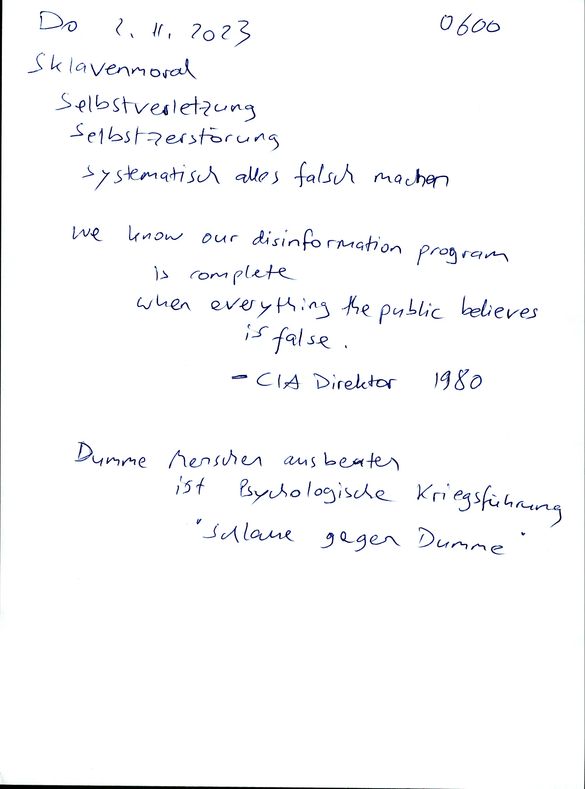
Ich suche die Naturordnung
also ich frage: Was passiert wenn ich alles wegnehme was Menschen erschaffen haben also was “künstlich ist.
also auch alle “Gesetze” und auch jede “Moral” die nach Aussen kodifiziert wurden (“in Stein gemeisselt”) weil das sind nur subjektive Weltbilder.
oder anders gefragt: Was würden Tiere tun? Tiere haben auch keine Buchreligionen, keine festgeschriebene Kultur.
Humanisten wollen ja immer “besser” sein als Tiere, aber ich sehe Tiere als Vorbild.

Fr 9.11.2023 0500
Krankes Essen
macht mich krank
Wiener Würstchen sind schleisse well Nitrit-Pökelsalz zieht Wasser aus meinem körper
Auch Hunde werden schnell fett und krank von Wiener Würsten
Typen 34 sind einfach nur dumm…
also zwar “emotional intelligent” aber “rational dumm”.
Typen 12 die mitspielen im kranken System der Typen 34 Sind Verräter und Versager die dumm und glücklich sein wollen aber die ihre Arbeit (Schlauheit) verweigern.

Demokratie ist Tyrannei der Mehrheit.
Demokratie ist wenn 3 Schafe gegen einen Wolf stimmen und dem Wolf sagen:
- “Pazifismus ist ne gute Idee”
- “Fleisch essen ist böse”
- “deine rechtsextreme Partei tun wir verbieten”
- “deine aggressiven Wörter darfst du nicht sagen”
- “Wenn wir deine Spezies ausrotten dann hast du Pech gehabt”
- “Wir müssen deine Spezies ausrotten damit unser System funktioniert.”
(Buch: The wolf tamers)

Fr 3.11.2023 0530
They Lied about
- Nitritpökelsalz
- Holocaust
- 9/11
- Iraq has Weapons of Mass Destruction
- Israel is Victim of Palestine
Inversions
Often they say the exact opposite because then their Lie is too big to fail.
because then only radical critics will critizise the lie but radical critics are banned from the public.

TODO Meme: Stupid and happy family
Mutter kocht giftige Scheisse für Kinder und kinder sind “brav” und essen die Scheisse.
höflich, nett, dankbar, passiv, anspruchslos, sich alles gefallen lassen, Harmoniesucht: “Lass uns nicht streiten.”
TODO Quote The Farewell Tour
von Chris Hedges?
TODO Quote Udo Ulfkotte
Das große Paradox
Viele Menschen hassen ihr Leben, wollen sterben, aber schaffen es nicht alleine.
Und deswegen: Legalize Serial Murder!

Fr 3.11.2023
Real Democracy only works works in small states of 150 People
Same Age Circles
F3 - M104 - F203 - M4
M104 F203 F302 M401

Bücher drucken ohne Strom
Wenn ich zu viel Geld hätte dann würd ich mir kaufen:
einen Diesel-Stromgenerator der 3 Kilowatt bei 230 Volt erzeugt.
Diesel ist besser zum Lagern als Benzin.
Der Generator sollte gekapselt sein in einem Gehäuse, dann ist er etwas leiser.
So ein Generator wiegt 150 kg und kostet 2000 Euro und läuft mit Diesel oder Heizöl und reicht für 4 Laserdrucker mit je 700 Watt.
Nachteil von Diesel: Dieselmotoren brauchen mehr Wartung (Warum genau? Einspritzung?)

Fr 3.11.2023 0700
Serienmord
Ein Paradies auf Erden gibt es nur mit Serienmord.
Das ist auch “der Deal” bei meiner Hypothese. Wenn ich Recht habe dann darf ich losgehen und jeden Tag 100 Leute töten und werde dafür belohnt wie jeder andere Arbeiter. Sagen wir 30 Euro pro Stunde wegen dem Gefahrenzuschlag.
Oder besser: Ich kriege pauschal 100 Euro für jede Leiche von einem Unwürdigen.

Fr 3.11.2023 2000
wenn einer meine Arbeit scheisse findet dann ist das ein legitimer erster Eindruck.
Man kann auch sagen: Wer meine Arbeit scheisse findet der wettet gegen meine Hypothese.
Dann stellt sich die Frage: Was ist wenn ich Recht hab? Was ist wenn ich die wette gewinne?
sind es gute Verlierer? sind es schlechte Verlierer?
Sa 21.10. 2023 1020
Psychiatrie ist Knast für Unschuldige
Drogen “Gangster” sind Controlled Opposition
Typen 24 haben Bad Taste und folgen dem Geschmack von Typen 13
Die Wahrheit ist zu einfach für Leute die sich schlau fühlen wollen
Truth is so simple its offending to “smart” people.

3.11.2023 2001
Ich hasse die meisten Menschen also 80 bis 99% aller Menschen
weil die meisten Menschen wollen immer nur kleine Probleme lösen und versagen für große Probleme weil für große Probleme braucht man effiziente Organisation aber and das ist ein großes Problem also Catch 22 Situation also Henne-Ei Problem.
… weil die meisten Menschen sind wertlos also wollen friedliche Lösungen und wenn es keine friedliche Lösung gibt dann kommt Ignoranz, dann stellt man sich passiv und wartet auf einen Erlöser der aber nie kommt.
- “Trump wird uns retten!” - Nein.
- “Putin wird uns retten!” - Nein.
- “Jesus wird uns retten!” - Nein.
- “Elon Musk wird uns retten!” - Nein.

Fr 3.11.2023 2002
Das große Paradox
- Mystik
- Mysterium
- Sklavenmoral
- Dummheit
- Religion
- Glauben
- Alles falsch machen aber sich Schlau fühlen.
- Ein sinnloses Leben führen aber nicht sterben wollen.
Sublimation
Jeder will seine Ziele erreichen aber keiner will dafür kämpfen weil man darf nicht kämpfen sondern man soll arbeiten.
Arbeiten ist sublimieste Aggression.
Arbeiten ist kastriertes Kämpfen.
Das betrifft auch so genannte “Gangster” die sich als Rebellen fühlen weil sie kleine Gesetze brechen (Drogen verkaufen) aber wer Aggression wirklich ausleben will der muss große Gesetze brechen. (Serienmord)

2003
Große Gesetze also Grundrechte / Grundsätze die in der Verfassung stehen.
Sowas wie “Recht auf Leben”. Pah! Nur würdige Menschen verdienen ein Recht auf Leben.
Aber die meisten Menschen haben genau so wenig ein “Recht auf Leben” wie eine Mücke die ich erschlage.
Meine Arbeit ist auch eine Grundsatzkritik
also ein radikaler Alternativ-Lösungsvorschlag
Meine Suche nach der Naturordnung entspricht der Frage: “Was passiert wenn ich alles wegnehme was von Menschen erfunden wurde?”
Also “Was würden Tiere machen?”
Oder: “Was haben die Urmenschen vor einer Million Jahren gemacht?”

Fr 3.11.2023 2004
Das Problem am Pazifismus ist: Jeder fühlt sich im Recht weil verschiedene Hypothesen werden nicht ausgekämpft, ausprobiert sondern “Streit ist böse” und “seid einfach lieb zueinander”. (Harmoniesucht. Symptompfuscher. Gier.)
Das kommt davon wenn Idioten und Schwächlinge führen dürfen.
… und wenn die “Bösen” immer folgen sollen.
verschiedene Hypothesen
werden nicht ausgekämpft, ausprobiert→ Also:
Jeder fühlt sich im Recht
Jeder fühlt sich als GewinnerGleichheit
“Alle haben gewonnen”
ist genau das Gegenteil von Wettbewerb, Kampf, Konkurrenz, Sport, Vergleich, Rangordnung, Kapitalismus
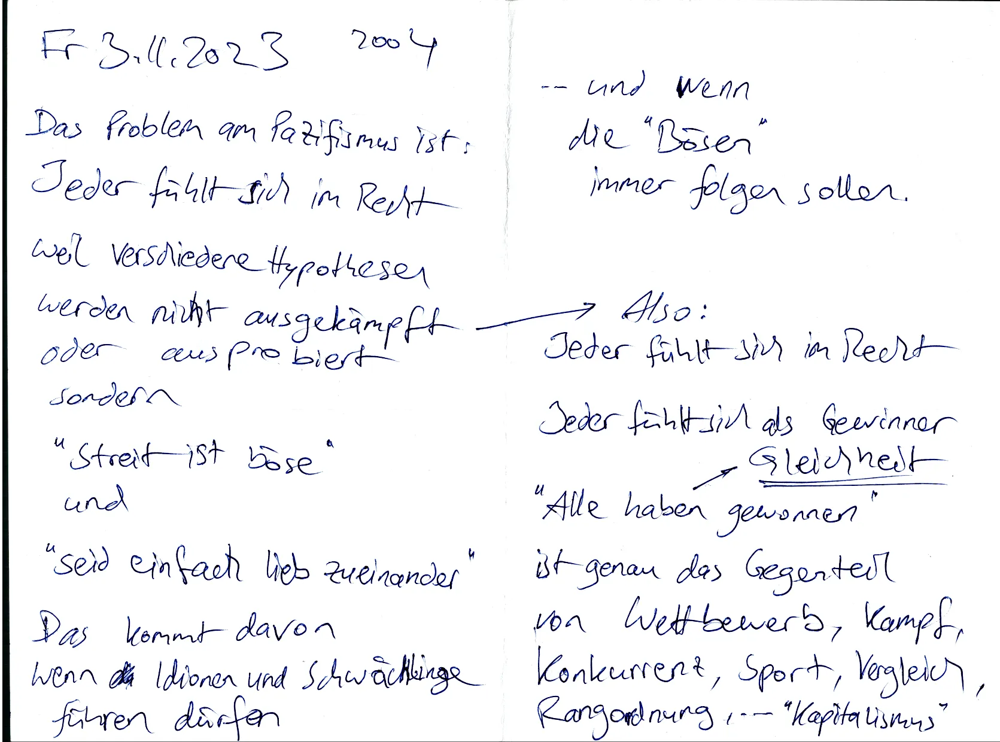
Sa 4.11.2023 0400
Der “Too Big To Fail” Kult
Wahrheit ist einfach, hart, schmerzhaft, bitter, direkt
Lügen sind kompliziert, Weich, beruhigend, Süß, Umwege
Wahrheit ist schmerzhaft für Lügen-Gläubige.
Deswegen: Wahrsager sind Gefühlsverletzer, Beleidiger.
Schüler im “Too Big To Fail” Kult werden ausgebildet zu maximal kompliziertem Denken und wenn man diese Menschen mit der einfachen Wahrheit konfrontiert dann sagen sie “Nein! Das ist zu einfach. Das kann nicht wahr sein.”
Weil Investitionsschutz: Diese Menschen haben zu viel Energie investiert zum tausend Lügen lernen und das zugeben wäre zu schmerzhaft.
(Warum leicht wenns auch schwer geht…)

Sa 4.11.2023 0700
Planet of The Humans
These are all desperate measures to preserve our Way of Life which is fundamentally not sustainable.
Matt Groening School Is Hell ↳ Cartoon?
Fight Club: Welche Relevanz hat das für unser Überleben im Sinn einer Jäger-Sammler-Kultur?
Drei Dinge für eine einsame Insel: die drei anderen Grundtypen.
Typen 23 müssen laut denken sind also “Schwätzer”
Biegen oder Brechen? Reform oder Revolution gemäßigt oder radikal

Sa 2100
George Orwell
Wer die Vergangenheit kontrolliert der kontrolliert die Gegenwart.
→ “Geschichte Unterricht in der Schule lehrt nur die offizielle Version der Vergangenheit aber die ist voll mit Lügen well”Sieger schreiben Geschichte”.
siehe auch Revisionismus Buchreligion Kult Programmierung
Seerecht Тур 4 Sozialdarwinismus
Landrecht Typ 2

FÜR PAPA ♡
HALLO PAPA

Mi 5.11.2023

So 5.11.2023 0700
“Die Agrar-Industrie wird uns retten.” – Nein. wir brauchen Selbstversorgung.
Kissinger Report
“Wir müssen die Afrikaner schwach halten damit wir die Rohstoffe von Afrika ausbeuten können.”
Bill Gates, Impfungen, Indien, Impfschäden
HPV-Impfung wurde beworben als Wundermittel gegen.Krebs (dabei ist Krebs ein Symptom von Nährstoffmangel).
Sklavenmoral ist eine Negativ-Seleletion well Dumme und Schwache werden subventioniert = belohnt und fühlen sich im Recht = als Gewinner.

So 5.11.2023 0730
Dampfmaschinen haben Zukunft
weil Holz ist ein nachwachsender Rohstoff
Pazifismus ist Krieg gegen die Natur
Die Aggression die sonst gegen Menschen geht gehen im Pazifismus gegen Tiere, Pflanzen, Lebensraum und wird belohnt als “Arbeit”
was meine feinde über mich sagen
Ihr Pallas Forschungsprojekt ist Volksverhetzung und wenn sie weiter ihre Bücher verschenken dann stecken wir sie in den Knast. - ein Bulle
Ich so: Warte kurz, Ich muss noch eine Million Bücher verschenken.
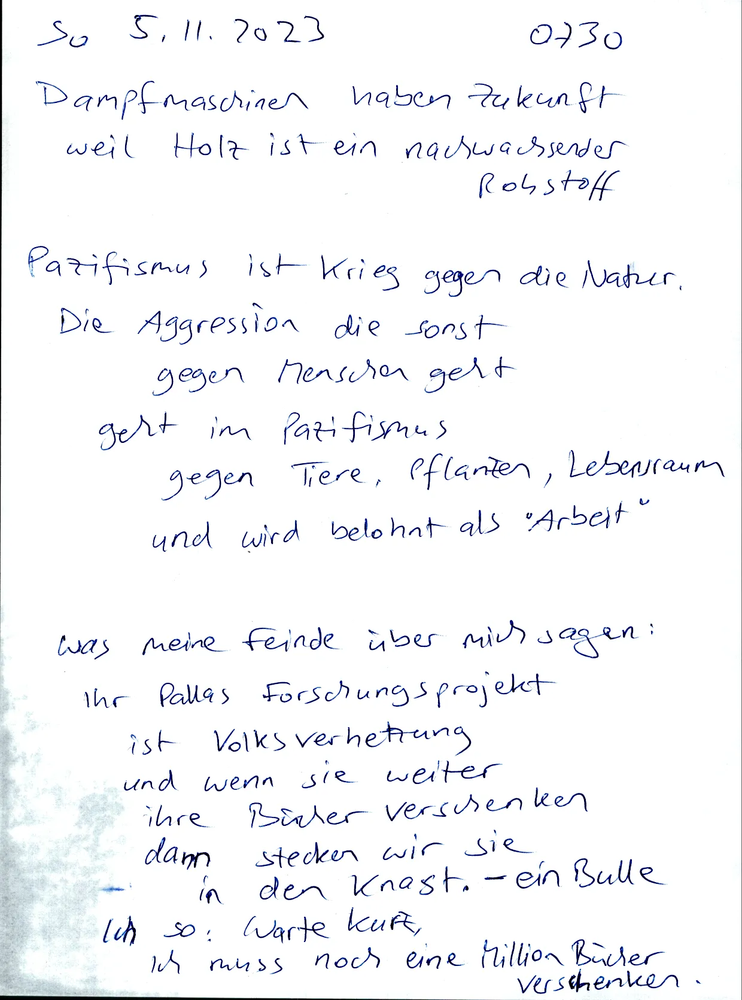
Bite the hand that feeds
Immigranten werden abhängig gemacht (abhängig: falsche freunde, Korruption) Von Vorgesetzten damit sie “dankbar” sind und “Liebe deine feinde” Leben.
Also genau die kriminellen Vorgesetzten die ich bei einer Revolution an die Wand stellen würde also ermorden würde.
die bleiben so am Leben und dafür wird die Unterschicht ausgetauscht.
also die alte Unterschicht wird ermordet (deutsche Männer) und ersetzt durch eine neue Unterschricht (afrikanische Männer)

So 5.11.2023 0800
Sozialismus
überschätzen Von Psychische Probleme
Unterschätzen von Physische Probleme
Mind over Matter
Guter Ruf ist wichtiger als Essen, Trinken, Wehrhaftigkeit
Abhängigkeit von Mitmenschen
Delegieren Von Harte Arbeit
Dienstleistungs Gesellschaft
“Lass uns alle Friseur werden dann können wir uns gegenseitig die Haare schneiden.”
und irgendwelche Dummen werden schon unser Essen produzieren.
Arbeitsscheu. Arbeitsverweigerer. wollen kleine Probleme lösen. Reformer. Wollen viel Geld verdienen. Fremdwert. Wollen Altruisten sein

Do 6.11.2023 0700
unser hoher Lebensstandard “High Life” ist abhängig von Importen aus der ganzen Welt für billige Rohstoffe und billige Energie.
Diese Abhängigkeit verhindert Dezentralisierung, Unabhängigkeit, Freiheit, Kleinstaaten.
Also muss zuerst unser hoher Lebensstandard gesenkt werden damit wir “Zurück zur Natur” gehen und unser Essen wieder selbst produzieren.
und unsere Kriege wieder selbst führen. = Bauern und Soldaten

Di 7.11.2023 0600
Dialog-Bindungen für Zweier Gruppen
Großstaaten übersteigen die Natürliche Gruppengröße von 150 Menschen (Dunbar’s Number) und um dieses fundamentale Problem zu verdrängen brauchen Großstaaten immer Lügen.
Globalisten. Sozialisten. Fernweh. Exotik ist gut, Liebe deine Übernächsten. Liebe deine Feinde.
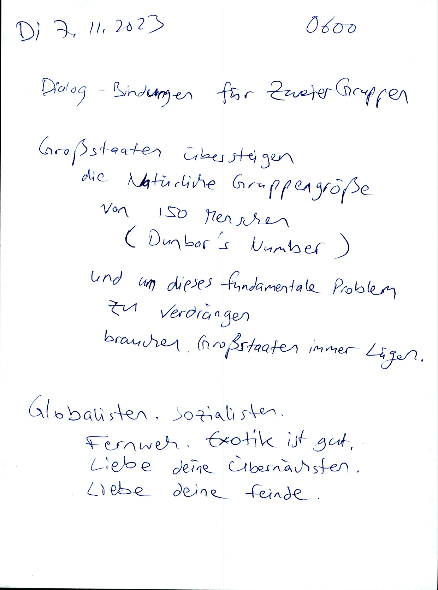
Typen 1234 = Kommunist Kapitalist Sazialist Totalitarist
Typen 12 Kleinstaaten
Typen 34 Großstaaten
Closed Source Software
macht Sinn damit Militars und Geheimdienste ihren Technik-Vorsprung halten können.
Technik für Zivilisten ist immer 20 Jahre hinterher.
Beispiel OCR- Software: “Consumer Grade” OCR Software ist zu blöd zum Texte lesen und produziert immer wieder Fehler.

Di 7.11.2023 0700
Stromgenerator bauen
Kleinwagen mit Diesel motor Der Motor hat circa 50 KW = 62 PS
Der elektrische Teil (Alternator) braucht einen Elektromotor.
Große Motoren sind schwer.
Bis circa 30 kg kann man alleine tragen.
30 kg wiegt ein 3 KW Elektromotor. 40 kg -> 4 KW
Der Elektromotor muss haben:
Drehzahl 1500 RPM (oder 1460 oder so)
Sternschaltung 230 Volt
Dreieckschaltung 400 VoltTODO wie muss man die 4 Pole anschließen damit 50Hz Wechselstrom rauskommt mit 230 Volt?

Dann muss man den Automotor verbinden mit dem Elektromotor am besten über einen Zahnriemen oder Keilriemen. Eine drehende Achse geht auch aber dann braucht man ein “Winkel getriebe”
Dieselmotor
Elektromotor
Strom
Biodiesel ist scheisse Weil der ist nur kurz haltbar und dann wird er schlecht weil “Dieselpest”.
Besser ist Synthetischer Diesel aus Holzgas oder gleich den Generator mit Holzgas antreiben.

Di 7.11.2023 0710
Alchi Book
Topic Communism (Bottom-up, small state)
Just use
<p>instead of<div class="para">and give a fuck about “valid HTML because all HTML Parsers are loose.Add an
id="..."Attribute to all paragraphs and image containers so we have a mapping between translations so we can move paragraphs to minimize white space. = change the sequence of paragraphsAdd a script to auto-add missing id attributes
maybe also add id attributes to meta tags? No, they have a name attribute.

Mi 8.11.2023 2200
Ich habe schon so viele Sachen verloren…
wichtige Sachen soll man festhalten und wiederholen, in Worte fassen und vermehren.
Mein Tagebuch (und meine TODO Listen) schreibe ich in in traurigem Gedenken an all meine verlorenen Ideen.
Wenn eine Idee weg ist kommt sie meisters nie wieder.
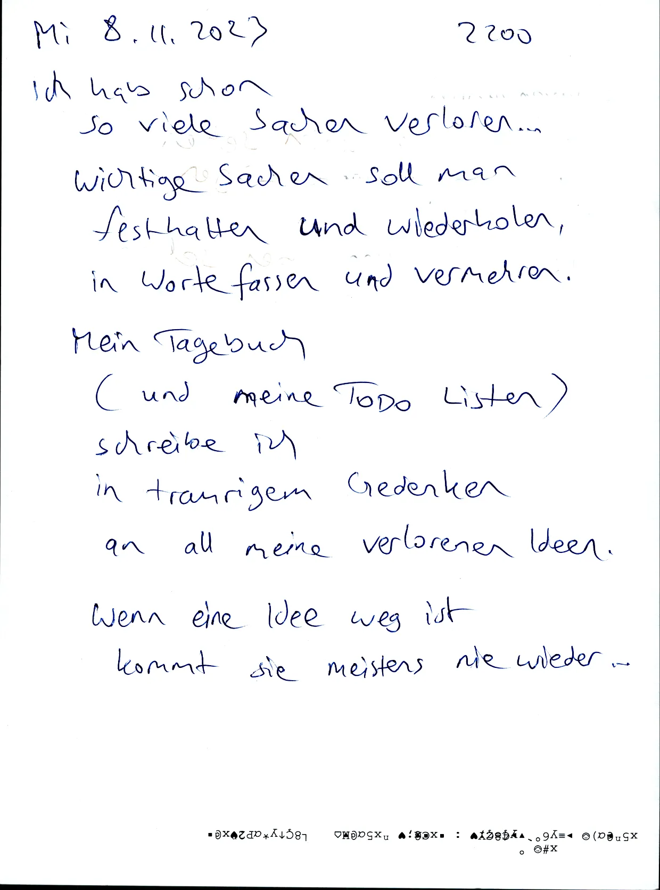
Sklavenmoral Herrenmoral Die Welt von unten sehen Die Welt von oben sehen viele komplizierte Lügen Wenige einfache Wahrheiten

Do 9.11.2023 1130
Linke Rechte Politisch Liberal? Politisch konservativ? Geduld Gier Weitsicht Kurzsicht Leben nach dem Tod Leben vor dem Tod Geistlich Weltlich Religion Wissenschaft Glauben Wissen warten Kämpfen Anfang Ergebnis Intention Resultat Gesinnungsethik . gut gemeint gut gemacht Das Paradox ist: Linke hassen das Leben aber wollen nicht sterben, Sondern ziehen alle Menschen in den Tod = Todestrieb, Thanatos

Do 9.11.2023 1700
Moin ihr Juden.
Warum leicht wens wenns auch schwer geht? So ungefähr ist euer Motto.
Wahrheit, Gerechtigkeit, Gleichgewicht, Naturordnung.. das wäre der leichte Weg und den beschreibe ich in meinem Buch.
Aber ihr seid “Sozial-Darwinisten” also ihr müsst alle “Anderen” ausrotten damit euer “schönes” System funktioniert.

Warum schreibe ich euch?
Sicher nicht zum ench aufhalten, das wäre Zeitverschwendung.
Ich will her cher “Tschüß!”Sagen. und “Viel Spaß!” sagen Bevor ihr meine Hälfte der Natur ausrottet.
Ich wollte ich noch Mal zusammenfassen wie “meine Welt” funktionieren würde. Also meine letzten Worte.

Do 9.11.2023 1900
Freimaurer sind Lakaien
Kabbala Juden wollen…
Messias und Paradies auf Erden
das Römische Imperium (Weltliche Herrscher) zerstören
Weltherrschaft
alle anderen Völker versklaven
Pazifismus ist Psychokrieg “Lass uns reden…”
Geist gegen Körper
Freimaurer (und Moslems, Christen, …) sind nützliche Idioten für Kabbala-Juden

Noah’s sieben Gebote
alte jüdische Religion
Altes Testament2000 Jahre Christentum waren ein Rückschrit
4000 Jahre
6000 Jahre
Endzeit, Eschatologie, Paradies auf Erden, Heiliges Reis, Himmel auf Erden
Salomonischer Tempel ist Palast von einem jüdischen König und Mittelpunkt von Freimaurerei, Gnostik: Welthass, Fernweh, Geist über Materie. Selbsthass. Körperhass

Do 9.11.2023 1920
Urzustand, Paradies auf Erden, Jüdische Weltherrschaft
Messias Ben David
Jüdische Priesterkaste
Jomkipur Ritual. Seitenwechsel
Sabat Zevi. Sabbatisten. Frankisten
Der dritte Tempel
Controlled Opposition. Pseudo Wissen. Einbildung. Gefängnis für den Verstand

Untertanen sollen dumm and glücklich sein (Ignoranz)
Wissen ist gefährlich. Schlau and traurig
Dunkle Okkultisten (schwarze Zauberer, Böse) wollen Herrscherwissen geheim halten → Typ 4 heimlicher Herrscher Schlau und verschämt

Do 9.11.2023 1930
Prometheus. Lichtbringer. bringt göttliches Wissen zu Menschen. Falsche Adresse!
Frucht vom Baum der Erkenntnis. Geheimwissen. Geheime Elite.
Juden sind das Auserwählte Volk (das glauben Juden)
Kain: Handwerker, Arbeiter, Kommunisten, Weltbauer, Sklaven für Israel, Weltenbauer, Typ 3?

TODO table
Seth. Priester, Oberschicht,
Typ 4? Typen 12 2 Arten Typen
Kain Bain Typen 34
Abel Typen 24?
Nicht juden Herren
Priester Schleimer Denker Sohn einer Witwe Juden Samael Sklaven Luzifer Satan Kelipot Seth aggressiv Böse Geister Höflich progressiv Feuer Gut Ungeduldig Ausbeuter Lügner naiv dumm Jako’s Manipulatoren unglauben Sklaventreiber Taten Handwerker Vernung Tempelbauer Erwachsene Alte ане Räuber produktiv Bauarbeiter Diebe geist-feindlich Schwätzer Wissen Gestalter Verwalter Schönhet Parasiten Paradies-Bauer Soft Skills
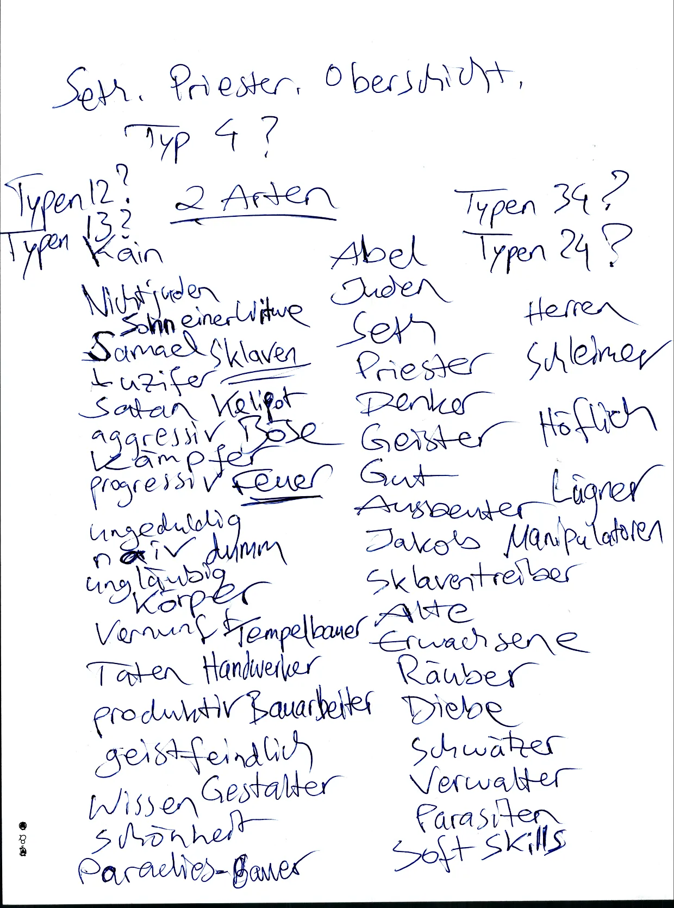
TODO image
Do 9.11.2023 1940
Einheit der Gegensätze
Conjunctio Oppositorum
Symbiose
Тур 1 Soldaten
oder
Bauern Тур 2
Typ 3 Priester
oder
Arbeiter Тур 4

Erste wird immer geopfert Erster Sohn Erster Tempel
TODO table
Satan Antigott Teufel Götzen Nichtjuden Freier Wille Gut und Böse Freiheit Pan - Mann? Ziegenbock Schlange Freie Völker Kleinstaaten Natur Jahwe Gott Juden
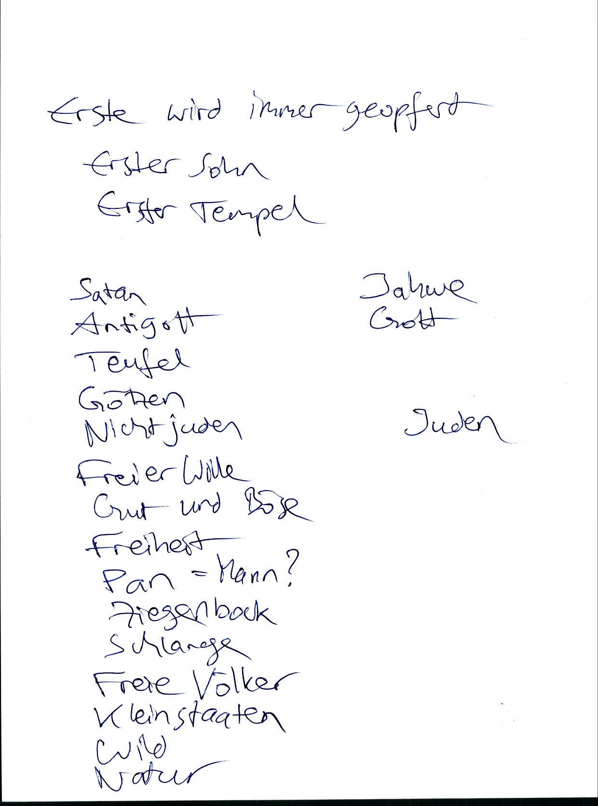
Do 9.11.2023 0950
Abyss - Abgrund
Ganz unten
(im Sephirot Baum?)
Kether
TODO image

- wilde Tiere dressieren
- Soft Power
- Sklaverei
- Missbrauch
- Ausbeutung
- Mind over Matter
- Umerziehung
- Monotheismus
- E Pluribus unum
- Weltherrschaft
- Weltordnung
- Viele Völker vereinigen unter einem Gott

Do 9.11.2023 2000
TODO table
- Westen
- Gott
- Sonnenuntergang
- “Materie ist böse”
- Anti Materie
- Kether
.
- Osten
- Luzifer
- Logenmeister
- Rechter Winkel
- Sonnenaufgang
- Materie
- Malkut

Wenn der Tempel fertig gebaut ist werden die Handwerker getötet ausser sie lassen sich versklaven als Noahider.
Handwerker sind Nützliche Idioten die nach der Revolution geopfert werden.
Handwerker: Leidender Knecht der im Steinbruch arbeitet

Do 9.11.2023 2010
Schluss-Stein = Keystone
TODO image
- Hiram Abif
- zu Stein geworden
- Jüdisches Volk ist das wahre Licht
- Licht gegen Dunkel
- Dunkel soll besiegt werden
- Dualismus zu Monismus
- Konkurrenz zu Monopol
- Noah’s sieben Gebote
- Sklaven Moral
- brave Arbeiter

- Völkermord
- Massenmord
- Endzeit
- Jesus der Weinkelter
- Völker werden geschwächt mit Wein
- Irrglaube: Wein ist gut

Fr 10.11.2023 0500
Reproduzierbare Hypothesen
Zitronen Limonade
Man braucht:
- Zitrone
- Natronpulver
- Wasser
- Flüssig süßstoff
- Messer
- Glas
Man muss:
- Zitrone in 2 Hälften schneiden
- Zitronenhälften ausdrücken ins Glas (mit Kerne)
- eine Messerspitze Natronpulver dazu
- einen Spritzer Süßstoff dazu
- das Glas mit Wasser auffüllen
- Fertig
Wenn du Leitungswasser nimmst (welches sonst…) dann tu die Wasserleitung spülen (Wasser laufen lassen) bis kaltes Wasser kommt.

Die Reproduzierbarkeit ist limitiert durch Rohstoffe.
Woher kommen Zitrone, Natron, Süßstoff, Messer, Glas, Wasser
Klar, in unserer Wohlstandswelt geht man einfach in den nächsten Supermarkt und kauft alle Zutaten, mit Geld für das man irgendwo gearbeitet oder gebettelt hat, bei anderen Menschen die zu viel Geld haben.

Fr 10.14 2023 0530
Probleme beschreiben und passiv bleiben kann jeder Depp.
Probleme und Lösungsvorschläge beschreiben und aktiv werden ist eine hohe Kunst, eine Königsdisziplin.
aber auch hier gibts viele Idioten die ihre Lösungsverschläge von irgendwem kopiert haben, die Lösung nur oberflächlich verstehen, und bei Problemen zu blöd sind dass sie zum Erfinder der Lösung gehen und den Erfinder fragen: Warum geht das schief? Warum funktioniert das nicht?
In der Chaos-Welt (Hölle auf Erden) ist es eher so: Keiner ist verantwortlich und wer Probleme hat der ist selber schuld

Fr 10.11.2023 0540
- Bist du Rahmen oder Inhalt?
- Frame oder Content?
- Bühnenbauer oder Künstler
.
TODO add onion Domains to Mirror List
- (darktea).onion
- (righttoprivacy).onion
Konservativer Bias:
- Alte sachen sind gut
- Junge Sachen sind schlecht
Politik: 1234
Kommunist Kapitalist Sozialist Faschist
Politik: 1234
extrem rechts. gemäßigt rechts. gemäßigt links. extrem links.

Fr 10.11.2023 0550
Typen 34 (Sozialisten und Faschisten) haben schöne Gesichter und hässliche Körper.
Diese Typen zwingen alle Menschen zum Kleider tragen und Menschen werden nach Gesicht bewertet (einseitig) nicht ganzheitlich nach Gesicht und Körper.
Gesicht = Face = Faith = Glaube = Vertrauen = Freundschaft
Deswegen:
- FKK ist tabu (Nacktbaden.)
- Pornos sind tabu

Fr 10.11.2023 0600
Krebs Therapie
Intravenöses Vitamin C
eklig, Hightech (Spritzen, Flaschen) Alternative?
Transdermales Vitamin C
Vitamin C hochdosiert also fußbad mit Vitamin C wasser.
oder Handbad Hauptsache “Innen” Flächen. vom Körper = Vorderseite
oder Vitamin C Creme hochdosiert
Wir brauchen sichere Persönlichkeitstests
“sicher” vor Messfehlern
also eindentig, zweifelsfrei
Beispiel Schlafposition? Typ 1 ist Bauchschläfer?

Zitat Markus Krall
Mathematische Modelle mit zu vielen Variablen sind zu komplex also wertlos für Prognosen.
Aber Modelle in Politik (Finanzen, Klima, Migration, …) werden absichtlich zu komplex gemacht damit man ein gewünschtes Ergebnis produzieren kann. = Zirkelschluss. Zirkulare Logik. Anti Logik. (Vorurteile.)

Sa 11.11.2023 0600
html book authoring
html editor
Inplace Editing of HTML Documents
Based on Clojure Script? Solid JS ?
HTML Parser Lezer Parser Tree Sitter → Live Coding
while preserving app state
Lapce? Ropes…
Hybrid Editor: Code Editor like Code Mirror WYSIWYG editor like Prose Mirror
Incremental Translations
Translate Changes to all other Languages
Full Translations
Translate full document to one new Language
(related: linked data, solid pods)

So 12.11.2023 0700
Antifaschisten die bei jeder Gelegenheit Methoden von Faschisten nutzen sind wie Bullen, die kriminell sind damit sie kriminelle jagen können.
Bei Beiden geht es um Privilegien also Faschismus ist ein Privileg das die Antifaschisten den Faschisten wegnehmen wollen.
Wie Sklaven die sich befreien wollen aus der Sklaverei und die zu Herren werden und dafür Andere versklaven.
Rollentausch

So 12.11.2023 1800
Was kann man machen
wenn mаn 16 Jahre alt ist noch zur Schule gehen muss in die 10. Klasse also noch ein Jahr und die Schule scheisse findet und lieber arbeiten will irgendwo im Büro oder im Innendienst? vielleicht zum Sport gehen (Kampfsport?) und dort Leute finden die gute Arbeit haben.
Auf jeden Fall Selbsthilfe. Privat.
was hätten wir früher gemacht? Haushaltshilfe? Im Garten arbeiten?
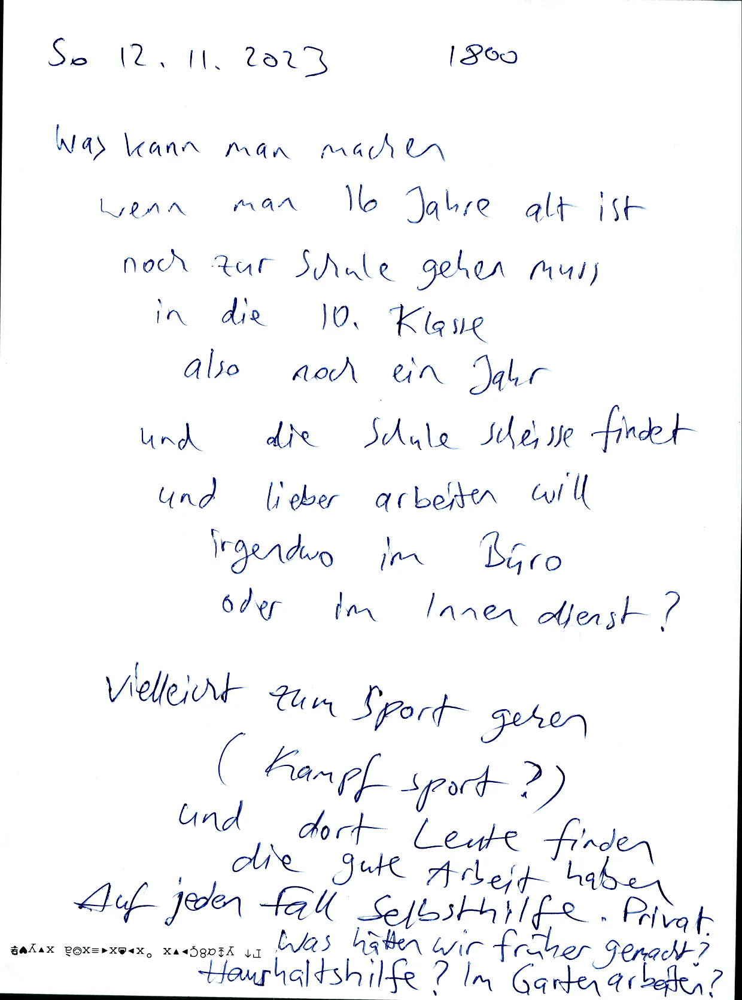
South Park Butters Schreibt Buch alle Eltern kotzen
Linkin Park Strings Violins Ascendo Rising Tones

Di 0500
Alchi Tags
- Natural Communism
- Radical Solutions
Tagebuch schreiben um vier Uhr in der Früh.
Ein Nachteil vom früh aufstehen: Es gibt noch kein Sonnenlicht und elektrisches Licht ist oft zu hell. Deswegen hab ich eine kleine Taschenlampe gebaut:
TODO image
Also eine LED Lampe getrieben von zwei AAA Batterien und der Strom (oder die Spannung?) wird begrenzt in einem Widerstand R. Der Widerstand ist so dimensioniert dass die LED die richtige Spannung und den richtigen Strom erhält.
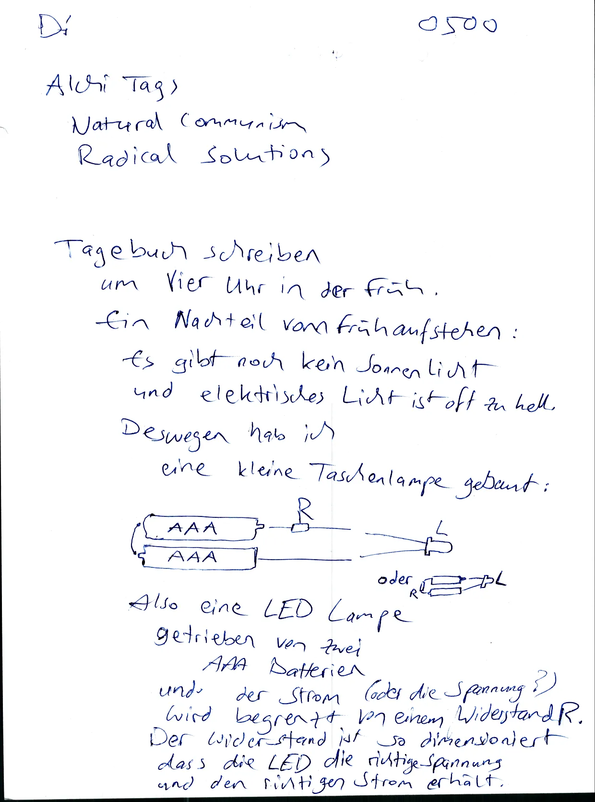
Mi 15.11.2023 0500
Font Chrome uses a more condensed (narrow) Sans serif font than Firefox.
can we use that font in firefox too?
Ideally via an included font file TTF or Woff not from an external domain
Add mеnu item “Language”
add id attr to every para
Translate the German version to German
- Differential Translator
- Incremental Translator
- Translate only changed text parts
Render Side-by-Side View of two languages aligned by paragraph ids
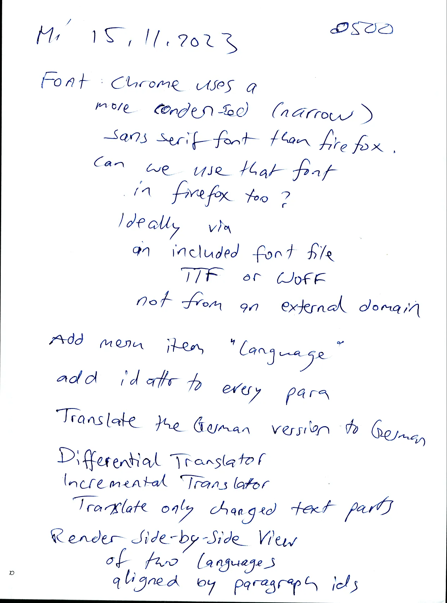
Mi 15.11.2023 0530
Lenin: Der beste Weg, Zu Kontrolle der Opposition: Wir müssen die opposition selbst führen.
Mossad steuert Hamas. CIA steuert Operation Gladio. CIA Steuert Drogenhandel. Geheimdienste steuern die RAF. Geheimdienste steuern Islamisten. (Black Operations.) Kabbalisten steuern Freimaurer. Kabbalisten steuern Christen, Moslems. → Gewaltenteilung ist nur Show.
Kinder brauchen echte Freunde. Kinder branden sinnvolle Arbeit. Kinder branchen Kampfsport-Ausbildung.

My Personal TODO List
My Personality dictates: “Start everything finish nothing”
I have started many projects but finished only some.
If I had more friends then I would delegate these projects
TODO qmake to cmake Translator Started, not finished. Qmake can express dependencies between install targets Cmake can not → Implement Toposort in cmake TODO qmake To Meson Translator Meson is newer/better than cmake

Mi 15.11.2023 0600
Gitea, Forgejo
tarballs and Zips of Git repos Should contain the Commit object so the content can be verified by the commit hash (git is a CAS) Simplest solution: store the commit object in .git/objects/
This means: Tools will have to fix their “is this a git repo?” check because only the presence of a .git/ folder does not make a git repo
or better: Include enough infos in the .git/ folder to allow reconstruction of the full .git/ folder – No.

Auto Update is a Computer Virus that allows Remote Code Execution.
Example: Brave Browser An attacker can include malware in the updated binary targetting certain individuals by ther IP address.

Do 16.11.2023 0700
Tinning Elektro
- Telefon Festnetz grau
- Docking Station Lenovo
Wish List
- Laptop 400 - 600 Eur
- Festplatte M.2 PCIe 2TB 200 Eur
- festplatte SATA 2× 10 TB RAID 500 Eur?
- Router mit 512MB oder 16B RAM 50-100 Eur

Do 16.11.2023 0710
Wertstoffhof Direkt-Recycling
Warum nicht?
Warum ist das verboten als “Diebstahl”?Ist die Industrie so mächtig?
Ist die Natur so egal?Direkt-Recycling wäre effizient rational
Komisch dass unsere.”grünen” Politiker das nicht legalisieren


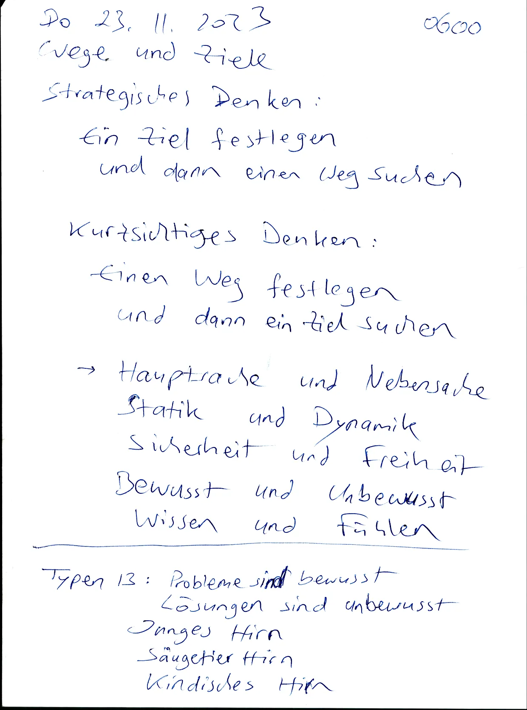